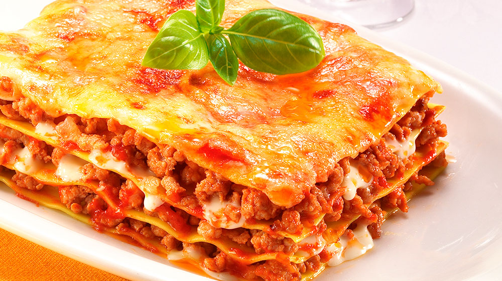

Lasaña

La lasaña es posiblemente uno de los platos más populares de la cocina mundial.
También es uno de nuestros platos preparados más exitosos, no en vano, disponemos de una amplia gama de lasañas congeladas,
todas ellas deliciosas combinaciones de pasta fresca con riquísimos rellenos, desde los más tradicionales de boloñesa, a los más nuevos como el de 4 quesos o el vegetal.
Incluso en Maheso elaboramos una lasaña sin gluten, apta para personas con celiaquía o intolerancia al gluten; y una lasaña con pasta integral, leche desnatada y carne de pavo y pollo,
ideal para los que quieren mantener la línea.
Untesilios de cocina
- Cucharas medidoras
- Cuchillo afilado (un adulto debe usarlo)
- Tabla para picar/cortar
- Taza medidora
- Abrelatas
- Rallador cuadrado (un adulto debe usarlo)
- Sartén grande con tapa (10 pulgadas/25,4 cm)
- Espátula resistente al calor
Ingredientes
1 cucharada de aceite de oliva o vegetal
1 cebolla grande, picada
1 diente de ajo pelado, picado finamente o pasado por el picador/planchador de ajos
2 calabacines (italiano) medianos, con los extremos cortados, cortados en cubos
1 cucharita de albahaca u orégano seco
1 lata de tomates cortados (28 onzas), incluyendo el líquido
1 ½ tazas de agua
¡A Cocinar!
- En un tazón, colocar la carne, el ajo en polvo, el Caldo de Carne de Res MAGGI® 2, la pimienta molida y marinar por 5 minutos.
- En una cacerola grande, colocar el aceite, la cebolla, el ajo, el apio y sofreír por 2 minutos.
- Añadir la carne y cocinar por 10 minutos revolviendo constantemente
- Cuando la carne adquiera una tonalidad gris clara, añadir la Salsa de Tomate MAGGI® estilo Boloñesa, el agua, las hojas de laurel, la sal y pimienta y cocinar a fuego medio por 15 minutos
- Armado de la lasaña: Al momento de montar la lasaña, untar con un poco de aceite un recipiente refractario o la bandeja que utilice.
Colocar una pequeña cantidad de salsa, cubrir el fondo de la bandeja con lascas de pasta precocida,
verter una cantidad pequeña de carne, añadir el queso mozzarella y una mínima parte de queso parmesano.
- Repetir este procedimiento hasta rellenar el recipiente.
Finalmente, colocar una capa de pasta precocida, la salsa que haya quedado y cubrir con los quesos.
La lasaña tiene que tener una buena cantidad de líquido para que la pasta se cocine. Si está muy seca, se le puede agregar caldo de pollo.
- Taparla con papel aluminio y llevar al horno a 150°C por 40 minutos.
- Paso adicional: A esta receta le puede agregar aceitunas negras y hojas de albahaca al momento de cocinar la carne.
Consejos para una lasaña Rechupete
Buenos ingredientes y un poco de maña o técnica en la cocina serán los aliados para una lasaña insuperable.
Siempre os digo que con buena materia prima el resultado, lógicamente, será mucho mejor.
Y un poco de tiempo o cariño, para hacerla incluso mejor que la de vuestra madre.
El relleno de esta lasaña es la clásica salsa boloñesa que podéis encontrar en el blog.
Aunque se pueden añadir las que más os gusten en casa, un poquito de apio, unos espárragos trigueros o unas berenjenas le van perfectas.
Imaginación y haréis una lasaña insuperable.
Ahí la tenéis, servidla calentita. Os aseguro que llega para 4 personas de manera generosa. Ya veréis como triunfáis en casa con esta receta, simplemente de rechupete.
Si sois de los que con un café aguantáis toda la tarde sin bostezar,
animaros con algo más potente como chorizo o morcilla.
Informacion Nutrimental
| Porción |
Calorías |
Grasas (g) |
Proteínas (g) |
Carbohidratos (g) |
Fibra (g) |
| 100g |
150 |
7 |
10 |
15 |
2 |
¿Quieres otra receta?, contactanos:
Pagina del administrador
Inicio